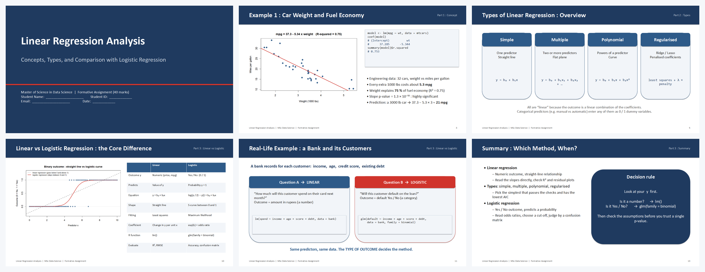
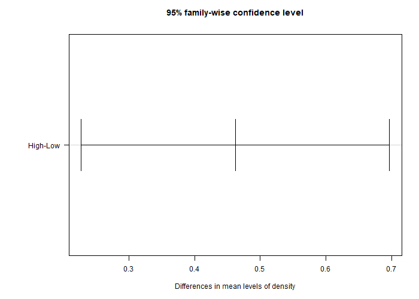
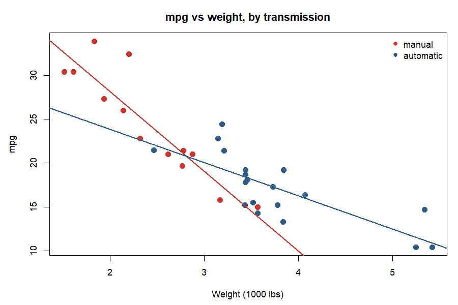

Start here
🖥️ Interactive slides: Basics of R
An in-browser primer on R syntax, data structures and plotting. Nothing to install.
Open slides →📖 Six-session lesson plan
The course outline, session by session, with learning outcomes and activities.
Read plan →R scripts (base R only)
| # | Script | Topic |
|---|---|---|
| 00 | 00_R_Basics_Complete_Reference.R | Maths, data structures, loops, functions, packages, statistics, distributions, plots |
| 01 | 01_Hypothesis_Testing_One_Sample.R | Z test, t test, proportion test |
| 02 | 02_Hypothesis_Testing_Two_Sample.R | F test, two-sample tests, paired t, two proportions |
| 03 | 03_One_Way_ANOVA.R | One-way ANOVA, Tukey HSD, assumptions |
| 04 | 04_Two_Way_ANOVA.R | Two-way ANOVA and interactions |
| 05 | 05_Linear_Regression.R | Simple and multiple regression, diagnostics, prediction |
| 06 | 06_Logistic_Regression.R | Logistic regression, odds ratios, confusion matrix |
Assessments and solutions
🎤 Formative: presentation (40 marks)
16-slide deck with speaker notes on linear regression, its types, and the contrast with logistic regression.
Download pptx → Slide plan →
✅ Summative: R report (60 marks)
Task 1: histogram function and regression with variable selection. Task 2: one-way and two-way ANOVA on crop yield.
Read solution → Word →
🔍 Exploratory data analysis
Four-layer EDA of both datasets with interpretation and actionable insights.
Read report → Word →